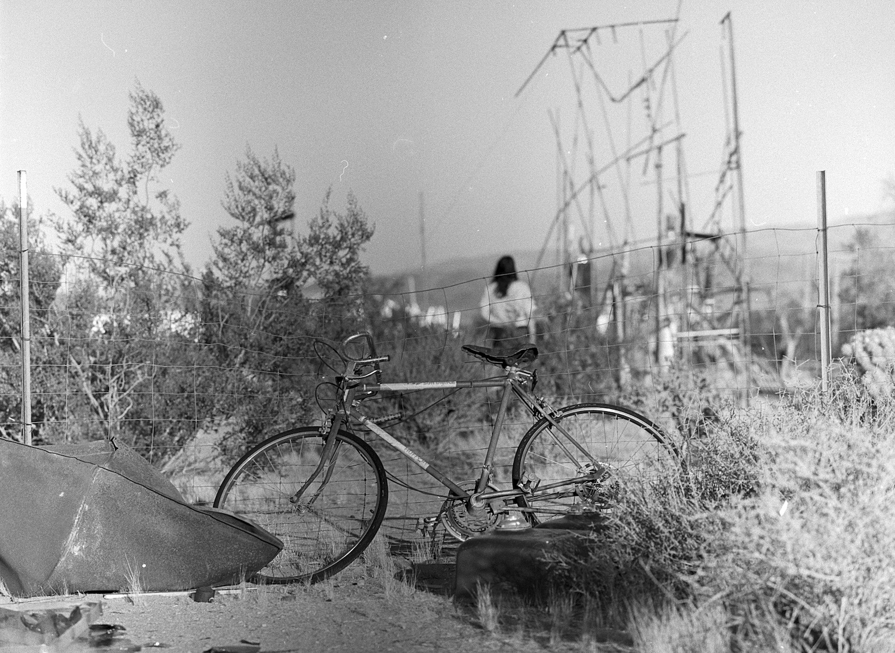

Jhakai Deshong
The Atwells, the Figuls, and Those who Follow
The light does not last
long enough
to know
the calendars’ columns
and the women who go there.
Not on any account of memory
but for the slow design of failure.
Weakness brought to weakness,
strength left to wear its own face/
where the bandaged sweater
makes the ceiling smile sweet,
and more blinking is done
by the books
rather than the newcomers,
arriving too soon,
always too soon to tell
that there is an ocean swept clean,
the brooms in each eye,
the record not longer than
a child’s jump rope
from east to west,
there is no advice
besides
to know that history cannot move
unless there is a garden to block its entry
unless there is aloe on its hills
and unless you are willing to give speeches
for singed parsley.
The sun is just
too many alphabets away from the street’s liquor
to be drunk.
Notice no empty flowers
only a barber’s suspicion
of natural rebellion
keeping close to other angels.
There is nothing here, yet my joy. Here, my joy has happened without me and it remembers me. I was small, and little, and smaller than the rest who it reached. The rest who could glance this way and that, with a mobility permitted by a no. No to the slice in the smile of old wood and no to the curvature of waiting. This is where I am, where I have said neither no or yes, and my joy is listening with nails, listening from the outskirts. Besides me, the unraveled spools of wandering and threatening hate. And who will jewel it besides my mother? Is it me? Me with the inherited inheritance of broken and imported lime luck. Me, with the mirror cropped out. I’m hearing nothing in this place. I’m hearing a car on a string, and it hurts right here. And there is no place to go, here, where there is nothing, yet my joy. So on the bend of my upturned curiosity are the rest looking down at me, and there I am at the top with the rest of myself, holding the bars of the prison I’ve made of my peace. Hoping for an escape from my freedom, or hoping for something smaller than escape. I only want her who is Billie to notice, if she’s still there in the corner eating saltines, and singing saltines. I only want him to be her, if it’s loud enough to crash the big wedding that never happened, that keeps happening in the hurt. It may have to be here, with the terrible comfort of a slow river, that I wait no longer to wait. That I look out from my memory with gloves, and that I reach for the unsullied spoils of indifference. That time where freedom could not afford me. When it came with slippers and left with slippers. Here is a place where I have shared without sharing. Here is a place where behind me stood the steadiness of my shy misfortune. And now and still, and forever, will it be with me I hope, and tremble. I hope and tremble. I hope and tremble.
In my country, there is nothing tall but the trees.
Tallest
amongst women,
will be the last to
have seen the sun.
from the baker’s chain
sneaking,
goes my brother,
growing.
enough road
to lose
his paleness.
to break cups
in his hands
is to break the evening walk
to East Virginia,
and the one repeating woman
has left her shadow
to dry in winter,
to walk
while nothing else can come,
but more of this land marked
by her lion tongue.
and he was resting with agreed hands,
to work on love
as if it’s done,
doing what it does to men,
near to no one held dear,
but then the toy wounded
in the backseat of a car
made the woman
worry herself
till worry left her completely.
Which then
could have been
how I lost them both.
The way the spending is done
on worthy horses,
could have been
a decent memory
to pass,
but along
this divide
there is only
cold food to break in half.
Honesty is a sniff isn’t it? It’s the nose torture, the mouth hiding, and the eyes becoming slits and bearing gifts. I like that face, but not when it’s mine. Then it’s boring because then it’s my nose torture, my mouth hiding, and my eyes becoming slits. I don’t like my face like that, because I have a big nose, says my husband. I have a big mouth, says my husband. I have preacher eyes off the stove, says my husband. Honesty? Doesn’t that mean resting? Like when your ears are at the same height as your feet and any walking that you’re doing has got to stop because your ears are on the floor too and god forbid that. My husband says that’s silly. Ears should never be on the floor he says. The floor is a place only for your feet, but I don’t think that’s true if you’re sleeping and especially if you’re being honest. Sleeping is too important for me, especially, if no one is there, because everyone is there then, they are just below. When I say they are below, I mean they are under, and under the floor watching you sleep and watching you be honest. Their ears are pressed against the wood, or the cement, or whatever material and they are there not to watch you sleep, but to watch you be honest! And who are they besides your husband’s friends! No, they’re your friends too if you’re being honest! And isn’t honesty just the pipes breaking. The rush of spit from your mother that you dodged and dodged until it got you and then your husband said what’s that and you said it was sparkling water you wiped on your face after washing up. And when he asked why, you said it was for him. You said your mother’s spit was for him, but he thought you were talking about the sparkling water, but you were talking about the water that belongs on the floor but that somehow found itself on your face. And you believe in enemies, and he doesn’t. He believes in you, but you don‘t because instead you are believing in battle. Because you do not like your face and you do not like being honest. Honesty is so sweet, but you will not do that beehive work. Honesty is so sweet, but you will not torture your nose to sniff endlessly flowers that will do nothing for you. Honesty is so sweet, but you do not like the flowers that will have honey for the colony, honey for the colony, honey for the colony. And you are not the colony. No, you are dishonest wife.